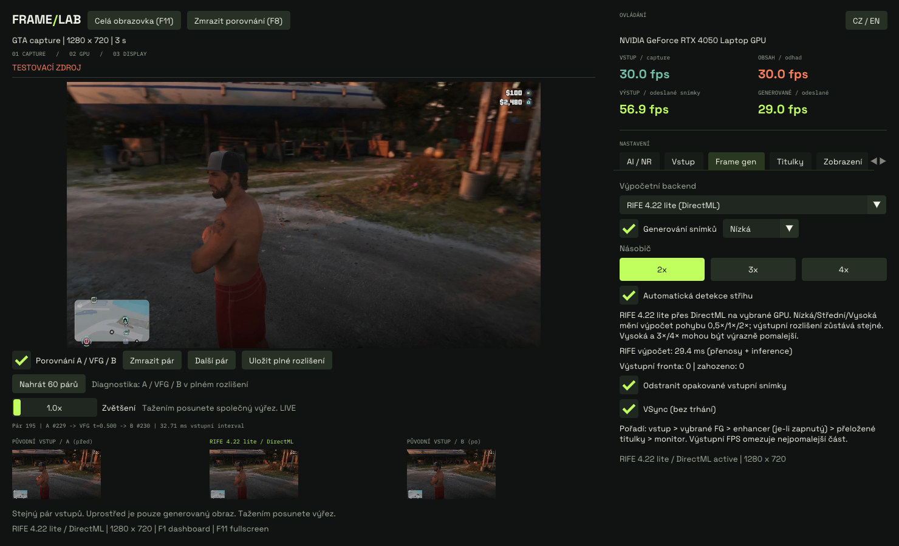
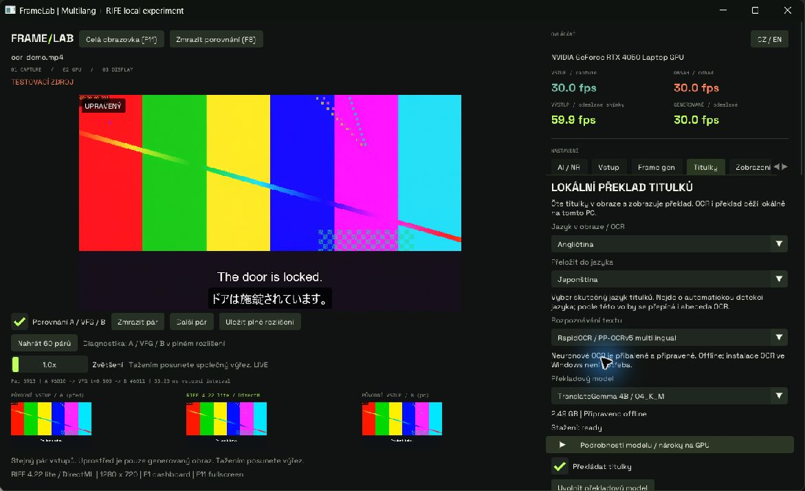

OpenAI GPT-6 Luna · none
98.1 / 100 · 1.49 s median
Capture. Generate frames. Translate. Choose the right path for your GPU.
Free · portable · EN / CZ interface · 40 subtitle language choices

GTA VI gameplay captured from PlayStation 5 (PS5), replayed in the current app. Screenshot counters are an illustration, not a benchmark.
Above: real rendering from the clean public preview.17 ZIP on RTX 4050. Counters are illustrative, not a benchmark. Archive / preview.16 ↗
Capture a PC or Remote Play window, show captions alone, or process the image. Local CUNI/Gemma now offer CUDA, Vulkan and CPU. Optional OpenAI uses your own paid key.
98.1 / 100 · 1.49 s median
93.8 / 100 · 0.82 s median
78.2 / 100 · 0.60 s median
74.4 / 100 · 0.17 s median
Direct review by the Codex assistant; subjective score, not a human accuracy audit. 500 identical EN→CS entries, without OCR, FG or NR. No further paid API calls for this review.
Ranking, biggest differences and all translations ↗One app for capture cards, game windows and local videos. Enable only the stages you need.
RIFE / DirectML, D3D11 Optical Flow or NVIDIA VFG. Suitable Intel/AMD/older GeForce can use the portable paths. Start at 2×.
Compare the same frame before and after NR. Resolution, strength and 1–4 passes.
40 language choices, 12 bundled OCR packs and optional TranslateGemma. Local translation with an independent overlay.
Open MP4 or MKV. Select audio and embedded subtitles, seek, pause and loop.
RAW, FG, matched before/after and final captioned video. SRT, IDs and settings included.
FPS, GPU, CPU, memory, latency, OCR and translation timings. Timestamped debug exports.
Pick a backend for your hardware. The Intel test is real; AMD and older GeForce are compatibility candidates, not measured promises.
| Backend | Hardware path | Tested here |
|---|---|---|
| D3D11 Optical Flow | Suitable Direct3D 11 GPU / driver | Intel UHD · RTX 4050 |
| RIFE 4.22 lite / DirectML | Suitable hardware DirectX 12 GPU; models/runtime included | Intel UHD · RTX 4050 |
| NVIDIA VFG | RTX 40 / 50 | RTX 4050 · RTX 5070 Ti |
| NR enhancer | Separate RTX/runtime restrictions; blocked on Intel/AMD/GTX | See profile-specific limits |
59.2 / s
Windows-confirmed presentations. Same 720p ~30 FPS clip, 2×, fullscreen.
59.3 / s
RIFE Low reached only 13.5/s on this iGPU. Optical Flow is the practical starting point here.
264 reconstructed images, 44 shared triples. Inspect actual RIFE/Optical/reference pixels with the sliding divider.
Pixel comparison · Czech report ↗These are application/Windows counters, not physical scanout measurements. RIFE runs on the tested Intel, but its speed is insufficient at 720p. AMD and older GeForce have not been physically benchmarked. Portable frame generation does not make NR or GPU translation work on every card.
Choose a backend and read the hardware limits ↗A camera rotation in GTA VI on PS5, captured through the AVerMedia GC573. Original on the left, original + recorded VFG 2× on the right.
Whole 15 s take: 440 input changes, 438 generated frames; 437 have both original endpoints recorded. The first pair is incomplete. Source-aligned slow motion removes processing delay and shows available generated positions. Recording load reduced actual submissions. These numbers do not prove 60 physical monitor FPS.
Original Spider-Man comparisons: 2×, 3×, combat and 4×. These are separate takes from earlier builds with different settings, not a controlled multiplier benchmark.
Slow motion is aligned to source time, so processing latency is removed. 4× is a failure example: split limbs, smearing and unstable detail remain visible. Extra frames do not guarantee correct motion or physical display FPS.

Combat phase strip: A → generated ⅓ → generated ⅔ → B. Click to enlarge; the linked reports include native crops and exact frame IDs.
Drag across the same recorded frame. NR changes textures and edges, but it can also invent or remove detail. More change is not a quality score.


Before already includes frame generation. Both sides use the same output ID. The first take is complete (15 s); the second stopped at 12.32 s and has 12.28 s of matched pixels. No replacement enhancement was applied for this page. External NR model files are a separate optional download. This is an experimental finished-image pipeline, not native in-game DLSS integration.
New: optional Eco enhancer. See the illustrated settings guide. ↗
40 source/target choices. Twelve OCR families included. TranslateGemma downloads directly in Subtitles; CUNI remains available for EN → CS.
Select the language actually visible in the picture. No speech transcription or automatic language guessing.
4B Q4: 2.49 GB · 4B Q8: 4.13 GB · 12B Q4: 7.30 GB. First GPU runtime adds 1.62 GB. Pick Q4 for an initial 6GB RTX test.
Position the translation above or below the original. Japanese, Arabic and other scripts render at output resolution. F11 hides comparisons and controls.

Tested: 56 short translations in 16 directions and 44 OCR images in 22 languages. Small Gemma Q4 makes clear Czech grammar mistakes; larger models and every language pair are not verified. Translation GPU compatibility is separate from DirectML frame generation.
Real OCR, real translation, real delay. The Czech text below was captured from the app’s final output, not added in a video editor.
These are recovered partial takes, not complete 15-second recordings. Original timing and translation mistakes are preserved. The full session contains 90 displayed captions: median capture-to-caption 0.96 s, p95 2.51 s. Setup and warmup are included; this is not a universal latency or accuracy claim. Dialogue includes strong language.
Historical preview.16 audit: all 1,747 translations assessed, zero unreviewed, full performance trace and original logs. The current download is preview.18.
All jobs: 1,406 without a clear error, 194 minor, 111 material errors, 36 insufficient context. Includes exact repetitions. One AI reviewer, not independently validated accuracy. Every judgment is inspectable.
Whole mixed-run averages. 0.821 s median caption delay, 2.090 s P95. Stutters remain: 77 gaps over 100 ms. OCR accuracy cannot be measured without reference images.
20 min 40 s from the stopped debug session. Gameplay, menus, setup and recording all stay in the graph. Orange bands mark recording.
Move over the chart to inspect a sample.
PS5 / GTA VI · Ryzen 9 5900X · 64 GB RAM · AVerMedia GC573 · 2560 × 1440 / 60 Hz input · VFG 2× Medium · NR 1440p / 1 pass
GPU is whole-system load. Submission FPS is not physical screen FPS. Latency excludes the game, capture hardware and monitor. Recording and export add load.
No compiler, Python setup or NVIDIA SDK installation for the included FG, OCR and CPU translator. Keep the whole folder together.
WINDOWS x64 / PREVIEW.18 ↓Full ZIP: 917.9 MB · source: 472.2 MB · preview.18
Windows x64 and current drivers. RIFE: suitable DirectX 12 GPU; Optical Flow: suitable Direct3D 11 GPU. VFG and NR have separate RTX restrictions. See the tested GPU matrix above.
Use Extract all. Do not start the app inside the ZIP.
Open Start FrameLab.cmd. The included GTA source clip runs on first launch. Later launches restore your session.
Capture: choose the card, resolution and FPS. Or select Open video for your own MP4/MKV.
Start with 2× FG. Enable subtitles when ready. NR files and GPU translation models have separate guided downloads.
Interpolation adds latency and can damage edges, HUDs and fast action. 3×/4× are experimental. A 2× setting does not guarantee twice the physical display rate.
Enhancement can change faces and textures. OCR can miss lines or read a sign. Translation can lose context or meaning. The examples show actual output, including imperfections.
Support development through my Opicebot portal. PayPal, donations in CZK. The donation page is Czech-only.